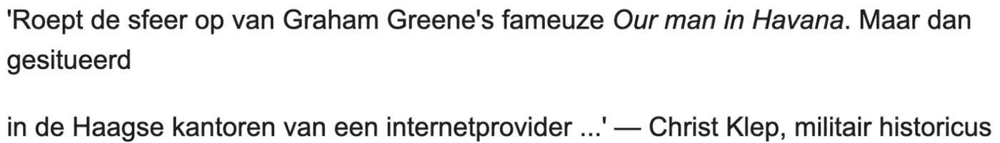

Prueba · Correo electrónico
Christ Klep a Giltay sobre su cita para el libro, 17 de agosto de 2014
El pasaje
«Evoca la atmósfera del célebre Nuestro hombre en La Habana, de Graham Greene. Pero ambientado en las oficinas de La Haya de un proveedor de internet…». Página 1, la cita tal como Giltay la transcribió en su mensaje del 15 de agosto de 2014, al pie del intercambio. Traducido del neerlandés; el texto original figura a continuación.
Texto original
“Roept de sfeer op van Graham Greene’s fameuze Our man in Havana. Maar dan gesitueerd in de Haagse kantoren van een internetprovider …” La captura de pantalla corta la línea después de «Maar dan gesitueerd» y deja una línea en blanco antes de «in de Haagse kantoren»; las líneas se han unido aquí. El documento pone la cita entre comillas simples y escribe Our man in Havana en cursiva y con m minúscula, mientras que la cita del sitio web lo escribe con mayúscula; termina con la atribución «Christ Klep, militair historicus» (Christ Klep, historiador militar). En su respuesta del 17 de agosto, en la parte superior de la misma página, Klep escribe que elegiría Delft, la ciudad que nombra la cita del sitio web.

Por qué importa este documento
El doctor Christ Klep, historiador militar y autor de Somalië, Rwanda, Srebrenica, había leído el manuscrito de El general del encubrimiento y había enviado a Giltay una cita para el libro. Giltay volvió a transcribirla en su mensaje del 15 de agosto de 2014. Dos días después, Klep respondió que elegiría Delft en lugar de «polderlandje» (pequeño país de pólderes) para tener, en sus palabras, dos ciudades en el título de todos modos. La cita de la sección de voces, que compara el libro con Nuestro hombre en La Habana, de Graham Greene, procede de este intercambio de correos y sigue esa elección de Delft.
Procedencia
- Documento
- Captura de pantalla de un intercambio de correos electrónicos en Gmail, una página
- Remitente
- Christ Klep, historiador militar
- Destinatario
- Edwin Giltay
- Fecha
- 17 de agosto de 2014, 18:46
- Asunto
- «RE: De doofpotgeneraal»
- Intercambio
- Dos mensajes: el de Giltay a Klep del viernes 15 de agosto de 2014, 18:06:57 +0200, hora de los Países Bajos, y, encima, la respuesta de Klep del 17 de agosto de 2014
- Mensaje citado
- Giltay agradece a Klep que haya leído y evaluado el manuscrito, dice que comentará las observaciones con su editor y transcribe la cita que Klep le había dado
- Respuesta
- Klep elige Delft en lugar de «polderlandje» (pequeño país de pólderes), para tener dos ciudades en el título
- Idioma
- Neerlandés
- Páginas
- 1
- Conservado por
- Archivo del autor
Citado en: la sección de voces bajo el epígrafe «Thriller de no ficción».
Ficha de prueba: https://
Documento: https://
Modificado por última vez el 13 de septiembre de 2026, consultado el 26 de noviembre de 2026.

Esta página es una ficha de prueba del libro El general del encubrimiento de Edwin Giltay y del sitio web que lo acompaña.